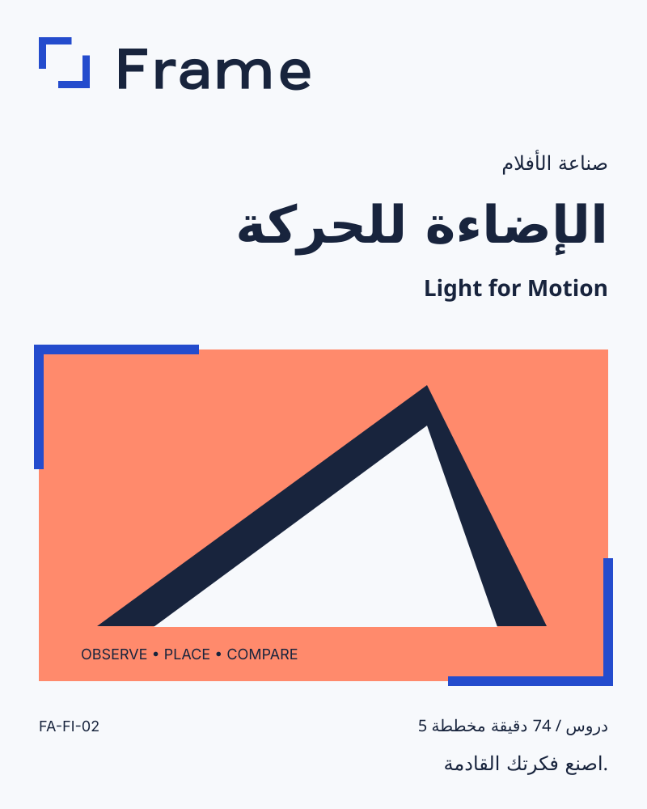

الإضاءة للحركة
Light for Motion
كراسة ممارسة
خمس مساحات عمل للتجربة والملاحظة. هذه تمارين مؤلّفة للكراسة، وليست فيديوهات مكتملة أو أسماء دروس معتمدة.
راقب الضوء المتاح
جرّب التمرين
سجّل تغيّر شيء واحد بجانب النافذة في وقتين من اليوم.
ما الذي تغيّر؟
قراري القادم
قارن اتجاه الضوء
جرّب التمرين
اصنع لقطة قصيرة بإضاءة جانبية وأخرى بإضاءة أمامية. قارن الظل والشكل.
ما الذي تغيّر؟
قراري القادم
شكّل التباين
جرّب التمرين
ضع ورقة بيضاء بجانب موضوعك. سجّل المشهد معها ومن دونها.
ما الذي تغيّر؟
قراري القادم
حافظ على الضوء أثناء الحركة
جرّب التمرين
حرّك الكاميرا ببطء مع إبقاء الموضوع في الضوء نفسه. دوّن ما تغيّر.
ما الذي تغيّر؟
قراري القادم
اصنع دراسة للضوء
جرّب التمرين
رتّب ثلاث لقطات قصيرة باتجاه إضاءة متسق. اشرح اختيارك.